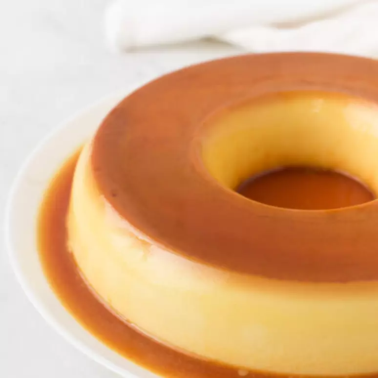

Pudim de Leite Condensado
-
INGREDIENTES
PUDIM
- 1 lata de leite condensado
- 1 lata de leite (medida da lata de leite condensado)
- 3 ovos inteiros
CALDA
- 1 xícara (chá) de açúcar
- 1/2 xícara de água
-
MODO DE PREPARO
- 1º PASSO: Coloque todos os ingredientes na mesa da cozinha;
- 2º PASSO: Comece pegando os ovos, quebre a casca e coloque o interior dos ovos no liquidificador;
- 3º PASSO: Ligue o liquidificador, e deixe bater os ovos por 1 minuto;
- 4º PASSO: Abra a parte superior da caixa de leite condensado e despeje o conteúdo dentro do liquidificador;
- 5º PASSO: Encha a caixa de leite condensado por completo com o leite e despeje o conteúdo dentro do liquidificador;
- 6º PASSO: Ligue o liquidificador novamente, e deixe pelo tempo que preferir, mas o necessário para que todo o conteúdo esteja bem batido;
- 7º PASSO: Pegue uma panela e coloque em cima da grade do fogão;
- 8º PASSO: Coloque o açúcar dentro da panela e ligue o fogo até ficar no ponto dourado escuro;
- 9º PASSO: Então, acrescente a água e desligue o fogo quando engrossar;
- 10º PASSO: Pegue uma forma redonda de pudim e coloque ao lado da panela com o caramelo;
- 11º PASSO: Coloque todo o caramelo dentro da forma e, em seguida, despeje a massa;
- 12º PASSO: Pegue uma travessa e encha com água;
- 13º PASSO: Coloque o pudim dentro da travessa; 13º PASSO: Ligue o forno em fogo médio;
- 14º PASSO: Coloque a travessa dentro do forno e feche-o, e aguarde 45 minutos para retirar seu pudim;
- 15º PASSO: Retire a travessa do forno e deixe o pudim esfriar;
- 16º PASSO: Se quiser, pode comer direto da forma ou desenformá-lo.
-
FINALIZAÇÃO
Agora que seu pudim está pronto, você pode decorá-lo da forma que preferir. Uma ótima escolha é colocar morangos ou ameixas por cima junto da calda ou fios de caramelos, eles também são uma ótima escolha! Aprecie sua sobremesa!